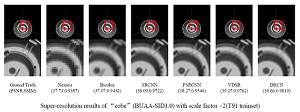

Haopeng Zhang
Assistant Professor | Beihang University
Assistant Professor | Beihang University
 |
A Comparable Study of CNN-Based Single Image Super-Resolution for Space-Based Imaging Sensors Haopeng Zhang*, Pengrui Wang, Cong Zhang, and Zhiguo Jiang Sensors, 2019, 19(14): 3234.PDF Abstract BibTeX AbstractIn the case of space-based space surveillance (SBSS), images of the target space objects captured by space-based imaging sensors usually suffer from low spatial resolution due to the extremely long distance between the target and the imaging sensor. Image super-resolution is an effective data processing operation to get informative high resolution images. In this paper, we comparably study four recent popular models for single image super-resolution based on convolutional neural networks (CNNs) with the purpose of space applications. We specially fine-tune the super-resolution models designed for natural images using simulated images of space objects, and test the performance of different CNN-based models in different conditions that are mainly considered for SBSS. Experimental results show the advantages and drawbacks of these models, which could be helpful for the choice of proper CNN-based super-resolution method to deal with image data of space objects. BibTeX
@Article{ZhangSensors2019, |
|
Real-Time 6D Pose Estimation from a Single RGB Image Xin Zhang, Zhiguo Jiang, and Haopeng Zhang* Image and Vision Computing, 2019, 89: 1-11.Preprint PDF link Abstract BibTeX AbstractWe propose an end-to-end deep learning architecture for simultaneously detecting objects and recovering 6D poses in an RGB image. Concretely, we extend the 2D detection pipeline with a pose estimation module to indirectly regress the image coordinates of the object’s 3D vertices based on 2D detection results. Then the object’s 6D pose can be estimated using a Perspective-n-Point algorithm without any post-refinements. Moreover, we elaborately design a backbone structure to maintain spatial resolution of low level features for pose estimation task. Compared with state-of-the-art RGB based pose estimation methods, our approach achieves competitive or superior performance on two benchmark datasets at an inference speed of 25 fps on a GTX 1080Ti GPU, which is capable of real-time processing. BibTeX
@Article{ZhangIVC2019, |
|
Vision-Based Satellite Recognition and Pose Estimation Using Gaussian Process Regression Haopeng Zhang*, Cong Zhang, Zhiguo Jiang, Yuan Yao, and Gang Meng International Journal of Aerospace Engineering, 2019, 2019: 5921246.PDF Abstract BibTeX AbstractIn this paper, we address the problem of vision-based satellite recognition and pose estimation, which is to recognize the satellite from multiviews and estimate the relative poses using imaging sensors. We propose a vision-based method to solve these two problems using Gaussian process regression (GPR). Assuming that the regression function mapping from the image (or feature) of the target satellite to its category or pose follows a Gaussian process (GP) properly parameterized by a mean function and a covariance function, the predictive equations can be easily obtained by a maximum-likelihood approach when training data are given. These explicit formulations can not only offer the category or estimated pose by the mean value of the predicted output but also give its uncertainty by the variance which makes the predicted result convincing and applicable in practice. Besides, we also introduce a manifold constraint to the output of the GPR model to improve its performance for satellite pose estimation. Extensive experiments are performed on two simulated image datasets containing satellite images of 1D and 2D pose variations, as well as different noises and lighting conditions. Experimental results validate the effectiveness and robustness of our approach. BibTeX
@Article{ZhangIJAE2019, |
|
Deep Learning Based Fossil-Fuel Power Plant Monitoring in High Resolution Remote Sensing Images: A Comparative Study Haopeng Zhang* and Qin Deng Remote Sensing, 2019, 11(9): 1117.PDF Abstract BibTeX Code AbstractThe frequent hazy weather with air pollution in North China has aroused wide attention in the past few years. One of the most important pollution resource is the anthropogenic emission by fossil-fuel power plants. To relieve the pollution and assist urban environment monitoring, it is necessary to continuously monitor the working status of power plants. Satellite or airborne remote sensing provides high quality data for such tasks. In this paper, we design a power plant monitoring framework based on deep learning to automatically detect the power plants and determine their working status in high resolution remote sensing images (RSIs). To this end, we collected a dataset named BUAA-FFPP60 containing RSIs of over 60 fossil-fuel power plants in the Beijing-Tianjin-Hebei region in North China, which covers about 123 km2 of an urban area. We compared eight state-of-the-art deep learning models and comprehensively analyzed their performance on accuracy, speed, and hardware cost. Experimental results illustrate that our deep learning based framework can effectively detect the fossil-fuel power plants and determine their working status with mean average precision up to 0.8273, showing good potential for urban environment monitoring. BibTeX
@Article{ZhangRS2019, |
|
On-Board Ship Detection in Micro-Nano Satellite Based on Deep Learning and COTS Component Yuan Yao, Zhiguo Jiang, Haopeng Zhang*, and Yu Zhou Remote Sensing, 2019, 11(7): 762.PDF Abstract BibTeX AbstractMicro-nano satellites have provided a large amount of remote sensing images for many earth observation applications. However, the hysteresis of satellite-ground mutual communication of massive remote sensing images and the low efficiency of traditional information processing flow have become the bottlenecks for the further development of micro-nano satellites. To solve this problem, this paper proposes an on-board ship detection scheme based on deep learning and Commercial Off-The-Shelf (COTS) component, which can be used to achieve near real-time on-board processing by micro-nano satellite computing platform. The on-board ship detection algorithm based on deep learning consists of a feature extraction network, Region Proposal Network (RPN) with square anchors, Global Average Pooling (GAP), and Bigger-Left Non-Maximum Suppression (BL-NMS). With the help of high performance COTS components, the proposed scheme can extract target patches and valuable information from remote sensing images quickly and accurately. A ground demonstration and verification system is built to verify the feasibility and effectiveness of our scheme. Our method achieves the performance with 95.9% recall and 80.5% precision in our dataset. Experimental results show that the scheme has a good application prospect in micro-nano satellites with limited power and computing resources. BibTeX
@Article{YaoRS2019, |
|
Star Detection and Accurate Centroiding for the Geosynchronous Interferometric Infrared Sounder of Fengyun-4A Haopeng Zhang, Yi Su, Lei Yang, Jian Shang, Chengbao Liu, Jing Wang, Shengxiong Zhou, Zhiguo Jiang, and Zhiqing Zhang IEEE Access, 2019, 7: 18510-18520.PDF Abstract BibTeX AbstractExtracting accurate star centroids in the observed star images is one of the key problems for image navigation of the geosynchronous interferometric infrared sounder (GIIRS) of Fengyun-4A Satellite (FY-4A), the first scientific experimental satellite of the new generation of Chinese geostationary meteorological satellite Fengyun-4 series. Compared with star sensors which are widely used for star observation, it is challenging to detect the 2×2 star spot from the focused star images of GIIRS and calculate the star centroid in high precision. In this paper, we propose a star detection and centroiding method based on trajectory search and trajectory fitting. Since the launch of FY-4A in December 2016, our centroiding method has been tested in-orbit for over two years. The extensive experiments show that the star centroiding error of our method is less than 0.3 pixels, which makes an important contribution to image navigation of FY-4A. BibTeX
@Article{ZhangAccess2019, |
|
Adaptive Color Deconvolution For Histological WSI Normalization Yushan Zheng, Zhiguo Jiang, Haopeng Zhang*, Fengying Xie, Jun Shi, and Chenghai Xue Computer Methods and Programs in Biomedicine, 2019, 170: 107-120.PDF Abstract BibTeX AbstractBackground and Objective Color consistency of histological images is significant for developing reliable computer-aided diagnosis (CAD) systems. However, the color appearance of digital histological images varies across different specimen preparations, staining, and scanning situations. This variability affects the diagnosis and decreases the accuracy of CAD approaches. It is important and challenging to develop effective color normalization methods for digital histological images. Methods We proposed a novel adaptive color deconvolution (ACD) algorithm for stain separation and color normalization of hematoxylin-eosin-stained whole slide images (WSIs). To avoid artifacts and reduce the failure rate of normalization, multiple prior knowledges of staining are considered and embedded in the ACD model. To improve the capacity of color normalization for various WSIs, an integrated optimization is designed to simultaneously estimate the parameters of the stain separation and color normalization. The solving of ACD model and application of the proposed method involves only pixel-wise operation, which makes it very efficient and applicable to WSIs. Results The proposed method was evaluated on four WSI-datasets including breast, lung and cervix cancers and was compared with 6 state-of-the-art methods. The proposed method achieved the most consistent performance in color normalization according to the quantitative metrics. Through a qualitative assessment for 500 WSIs, the failure rate of normalization was 0.4% and the structure and color artifacts were effectively avoided. Applied to CAD methods, the area under receiver operating characteristic curve for cancer image classification was improved from 0.842 to 0.914. The average time of solving the ACD model is 2.97 s. Conclusions The proposed ACD model has prone effective for color normalization of hematoxylin-eosin-stained WSIs in various color appearances. The model is robust and can be applied to WSIs containing different lesions. The proposed model can be efficiently solved and is effective to improve the performance of cancer image recognition, which is adequate for developing automatic CAD programs and systems based on WSIs. BibTeX
@article{ZhengCMPB2019, |
|
Vision-based Pose Estimation for Textureless Space Objects by Contour Points Matching Xin Zhang, Zhiguo Jiang, Haopeng Zhang*, and Quanmiao Wei IEEE Transactions on Aerospace and Electronic Systems, 2018, 54(5): 2342-2355.Preprint PDF link Abstract BibTeX AbstractThis paper presents a novel vision-based method to solve the 6-degree-of-freedom pose estimation problem of textureless space objects from a single monocular image. Our approach follows a coarse-to-fine procedure, utilizing only shape and contour information of the input image. To achieve invariance to initialization, we select a series of projection images that are similar to the input image and establish many-to-one 2D–3D correspondences by contour feature matching. Intensive attention is focused on outlier rejection and we introduce an innovative strategy to fully utilize geometric matching information to guide pose calculation. Experiments based on simulated images are carried out, and the results manifest that pose estimation error of our approach is about 1% even in situations with heavy outlier correspondences. BibTeX
@Article{ZhangTAES2018, |